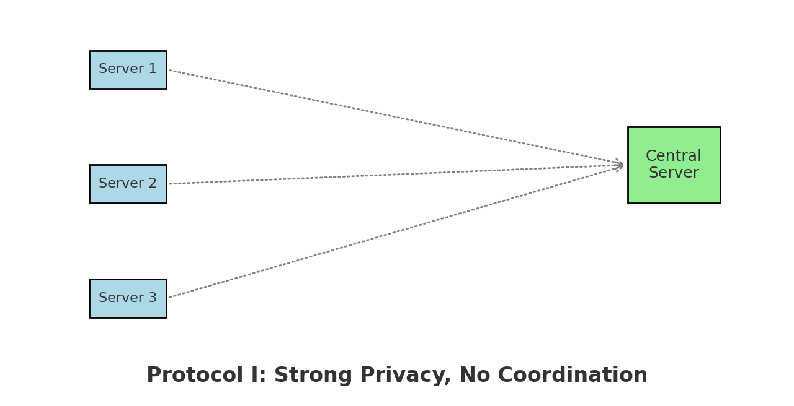
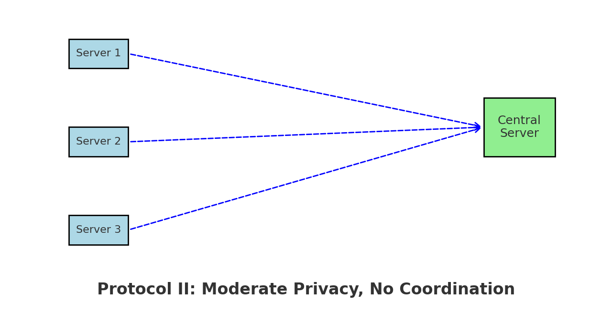
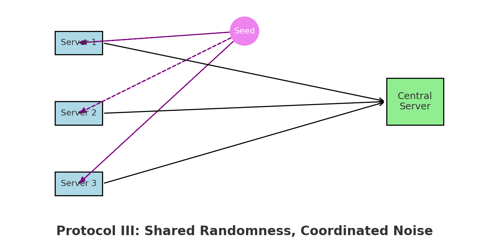
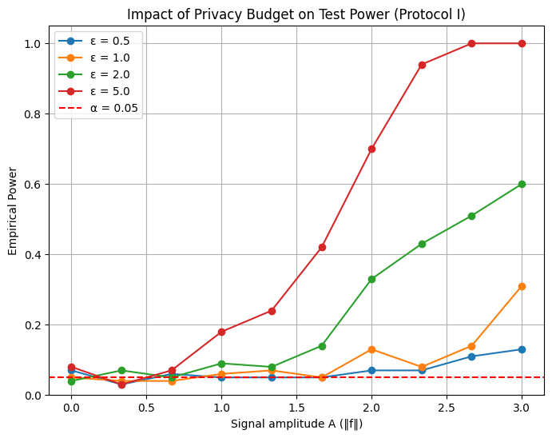

Breaking Privacy Barriers: Nonparametric Testing in Federated Learning
Author: Idriss Lakas
What if we could test complex statistical hypotheses on sensitive data without ever accessing the data itself?
In an era where data privacy regulations like GDPR and HIPAA are reshaping the digital landscape, the tension between data utility and confidentiality has never been greater. Nowhere is this conflict more pronounced than in federated learning, a framework enabling multiple institutions to collaboratively analyze data without exchanging raw data.
This blog explores the paper:
“Federated Nonparametric Hypothesis Testing with Differential Privacy Constraints: Optimal Rates and Adaptive Tests”
by T. Tony Cai, Abhinav Chakraborty, and Lasse Vuursteen (2024).
Read the paper
Table of Contents
- 1. Setting the Scene: Privacy Meets Federated Testing
- 2. The Statistical Challenge: Minimax Testing in a Noisy World
- 3. Three Protocols to the Rescue
- 4. Going Adaptive: Testing Without Knowing the Smoothness
- 5. Reproducibility: A Hands-On Attempt
- 6. Conclusion and Outlook
- References
1. Setting the Scene: Privacy Meets Federated Testing
Imagine a network of hospitals, each holding sensitive patient data. They want to collaborate to detect whether a new biomarker has any statistical effect without ever sharing raw data due to strict privacy laws.

Figure 1: In federated learning, data remains local. Only privatized updates or models are sent to the server, preserving user privacy.
Let’s zoom in:
Suppose 12 cancer research centers want to determine whether a treatment biomarker affects survival. They can’t pool data due to GDPR. Can they still collaborate without privacy leaks?
This is where federated nonparametric testing under differential privacy becomes essential.
The paper addresses the problem of testing:
$$ H_0: f = 0 \quad \text{vs.} \quad H_1: f \ne 0 $$
This is a nonparametric goodness-of-fit test, where $f$ is an unknown function, observed through noisy measurements distributed across multiple users under strict differential privacy (DP) constraints.
To model the data, the authors use the white noise model:
$$ dX_t^{(j);i} = f(t),dt + \sigma,dW_t^{(j);i}, \quad t \in [0,1] $$
with:
- $f(t)$: the unknown signal,
- $\sigma$: the noise level,
- $W_t^{(j);i}$: Brownian motion for server $j$, observation $i$.
2. The Statistical Challenge: Minimax Testing in a Noisy World
The central task in this scenario is to detect whether a function $f$ is zero or not. This requires addressing several obstacles. First, the data is distributed across multiple servers making direct access difficult. Secondly, both measurement errors and privacy noise significantly distort the observations. Finally, the smoothness of the function $f$ is unknown, adding further complexity to the detection process.
To address these challenges, the authors introduce the concept of the minimax separation rate $\rho$. This rate represents the smallest norm $|f|_{L^2}$ for which testing can still reliably distinguish whether $f = 0$ or $f \neq 0$. In a centralized, non-private setting, the minimax rate is well understood and straightforward to calculate. However, once differential privacy constraints are applied in a federated environment, the situation becomes much more complicated.
The authors present a theoretical result that provides the separation rate under shared randomness:
$$ \rho^2 \asymp \left( \frac{\sigma^2}{mn} \right)^{\frac{2s}{2s + 1/2}} + \left( \frac{\sigma^2}{mn^{3/2} \varepsilon (1 \wedge n \varepsilon^2)} \right)^{\frac{2s}{2s + 1}} + \frac{\sigma^2}{mn^2 \varepsilon^2} $$
This equation breaks down into three distinct components:
- The first term represents classical noise, which is a fundamental part of the problem even without privacy constraints.
- The second term accounts for the degradation caused by privacy, particularly as the privacy budget $\varepsilon$ becomes smaller.
- The third term is a high-order correction that further refines the overall separation rate.
One important takeaway from this result is that as privacy becomes stricter (when $\varepsilon$ gets smaller), it becomes more difficult to detect whether $f \ne 0$ even if we have access to more data.
3. Three Protocols to the Rescue
In order to put these results into practice, three protocols were introduced, each adapted to a different combination of confidentiality strength and server coordination capabilities.
These protocols serve one goal: test whether $f \ne 0$ in a private, distributed world.
Let’s walk through each of them.
Protocol I : High Privacy, No Coordination
This protocol is designed for scenarios with very tight privacy constraints: small $\varepsilon$ means each server must heavily obfuscate its data.
How it works:
- Each server applies a wavelet transform to its local signal and then adds calibrated noise (Laplace or Gaussian).
- The noisy coefficients are sent to the aggregator.
- The central server performs a global test by summing across servers.
Characteristics:
- Fully local and non-interactive
- Strong differential privacy guarantees
- Lower statistical power due to high noise

Figure 1: Protocol I – Local privatization without coordination, suited for high privacy regimes.
Protocol II : Moderate Privacy, Still Decentralized
When privacy is less strict (larger $\varepsilon$), servers can afford to transmit more accurate information while still operating independently.
How it works:
- Servers truncate their wavelet coefficients to reduce sensitivity.
- They apply lighter noise and send the result to the aggregator.
- The test statistic resembles a chi-squared test over the aggregated data.
Characteristics:
- Better trade-off between privacy and power
- No need for shared randomness
- Still suboptimal compared to centralized performance

Figure 2: Protocol II – Looser privacy allows sharper signals, but still no coordination.
Protocol III : Shared Randomness, Shared Power
If servers can coordinate via a shared random seed, they can align their noise injection leading to much better aggregation.
How it works:
- Servers agree on a common random rotation (e.g., permuting coefficients).
- After this shared preprocessing, each adds noise and sends the result.
- The aggregator reconstructs the test statistic more effectively.
Characteristics:
- Best statistical performance
- Still privacy-preserving under DP
- Requires infrastructure for randomness synchronization

Figure 3: Protocol III – Shared randomness unlocks optimal testing power.
When to Use Which Protocol?
| Scenario | Best Protocol |
|---|---|
| Strong privacy, no coordination | Protocol I |
| Moderate privacy, no coordination | Protocol II |
| Moderate privacy, shared randomness | Protocol III |
These three protocols provide practical design blueprints depending on your real-world constraints whether you’re deploying federated health monitoring, smart grid anomaly detection, or collaborative sensor networks.
4. Going Adaptive: Testing Without Knowing the Smoothness
So far, we assumed that the unknown signal $f$ has a known smoothness parameter $s$, which controls how “wiggly” or complex it can be. But real-world signals rarely come with such information.
This raises a key question:
Can we design a test that performs well even when we don’t know how smooth the signal is?
This raises an essential question:
Can we design a test that gives good results even when we don’t know how fluent the signal is?
The authors demonstrate that it’s indeed possible to design such a test using an adaptive testing procedure.
What is Adaptivity?
Adaptivity means that the test automatically adjusts to an unknown regularity level $s$ the smoothness of $f$. Instead of committing to a single test tuned for one $s$, the adaptive test simultaneously considers many possibilities, and picks up the strongest signal.
How Does It Work?
The test proceeds in three steps:
-
Grid Search Over Smoothness
A discrete grid of smoothness levels $s \in {s_1, s_2, …, s_k}$ is selected. -
Multiple Parallel Tests
For each $s_j$, a dedicated wavelet-based test (as in the previous section) is applied to the privatized data. -
Combination Rule
A final decision is made using a multiple testing correction (like Bonferroni or max-statistics). If any test is significant, we reject $H_0$.
What’s the Cost of Being Adaptive?
One might think that adaptivity comes with a steep statistical price.
Surprisingly, the cost is very mild: only a logarithmic penalty.
The adaptive test achieves a near-optimal separation rate: $$ \rho_{\text{adaptive}} \asymp \rho^* \cdot \sqrt{\log\log(mn)}, $$ where $\rho^*$ is the minimax rate for the correct $s$, and $mn$ is the total sample size.
This means we gain robustness across function classes with minimal loss in power an excellent trade-off in practical applications.
Why This Matters ?
In real data sets, we often have no prior knowledge of the fluidity of the underlying signal, whether it’s a medical biomarker, a financial anomaly or a model of user behaviour. Adaptive testing makes sure that:
- You don’t need to guess $s$ ahead of time.
- You still achieve near-optimal detection rates.
- The method remains privacy-preserving and decentralized.
This adaptability brings us one step closer to deploying these tools in real-world systems with minimal assumptions.
5. Reproducibility: A Hands-On Attempt
To validate the core insights of the paper, we implemented Protocol I, which performs federated nonparametric testing under local differential privacy constraints without any server coordination. The goal was to empirically examine how the level of privacy—controlled by the budget parameter ε affects the ability of the test to detect a signal.
In our simulation, we used the white-noise-with-drift model, with $m = 5$ servers, each observing $n = 100$ samples. The underlying signal was defined as $f(t) = A \sin(2\pi t)$, with the amplitude $A$ controlling the strength of the signal. Each server computed a local $\ell^2$-based statistic and added Gaussian noise calibrated to the desired $(\varepsilon, \delta)$ differential privacy guarantee. The noisy statistics were then aggregated and compared to a threshold estimated under the null hypothesis.
We repeated the experiment for four privacy budgets: $\varepsilon \in {0.5,\ 1.0,\ 2.0,\ 5.0}$. The empirical power of the test was evaluated as a function of the signal amplitude $A$, for each ε.

Figure 5.1: Empirical power vs signal amplitude for various ε. Higher ε (weaker privacy) leads to better detection.
The results show a clear phase transition in test performance. For strong privacy (ε = 0.5), the test remains almost blind, failing to detect even strong signals. As ε increases, the added noise diminishes and the test becomes more sensitive. With ε = 2.0, detection starts improving significantly for moderate signals. At ε = 5.0, the test performs nearly optimally, detecting signals with high probability for $A \geq 2.5$.
These empirical results are in line with the theoretical findings of the paper which highlight the existence of distinct regimes in the minimax separation rate depending on ε. In high-privacy settings, the rate is dominated by the noise from the privacy mechanism, while in low-privacy settings, the test approaches the optimal detection rate of the non-private case.
Although the paper did not provide full pseudocode, we were able to reproduce the key ideas using simplified assumptions. Threshold calibration was done via Monte Carlo simulation under the null, and sensitivity bounds were approximated based on the $\ell^2$ norm of Gaussian noise. We leave the implementation of Protocols II and III, which require shared randomness and wavelet transforms, for future work.
This hands-on attempt provides concrete validation of the theory and illustrates the delicate balance between privacy and statistical power in federated hypothesis testing.
6. Conclusion and Outlook
To conclude, this work shows that it’s possible to perform powerful hypothesis testing even when data is noisy, private, and distributed, which is a setting increasingly common in today’s world. By combining differential privacy, wavelet methods, and smart coordination protocols, we get a toolbox that balances privacy, accuracy, and decentralization. The adaptive test adds another layer of flexibility, working well even when we don’t know the signal’s complexity.
These results are promising for real-world applications like healthcare and finance, where privacy is key and collaboration is necessary.
References
-
Cai, T. T., Chakraborty, A., & Vuursteen, L. (2024). Federated Nonparametric Hypothesis Testing with Differential Privacy Constraints: Optimal Rates and Adaptive Tests. arXiv preprint
-
Duchi, J., Jordan, M., & Wainwright, M. (2013). Local Privacy and Statistical Minimax Rates. [FOCS 2013].
-
Wasserman, L., & Zhou, S. (2010). A statistical framework for differential privacy. [JASA].